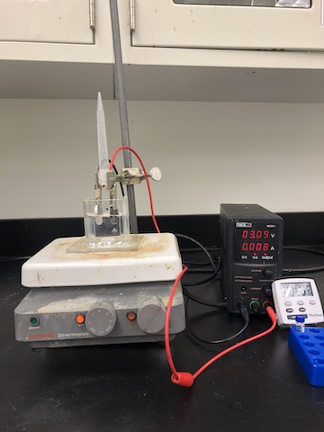

Experiment Details
Updated June 7, 2022

Setup of the PFOs and SiC anode experiment. The steel cathode is on the left and the SiC anode is on the right. The wires are attached to the buret clamp by squeezing them against a pipette.
Materials
- 50mL DI water
- 0.5mL 100ppm PFO stock solution
- 0.335g Na2SO4
- Magnetic stirrer
- Silicon carbide disc
- Stainless steel disc
- Plastic tube
- Buret clamp
- 2 Alligator clips and wires
- Generator
- 14 vials
- Precision pipette
- 7mL M8PFOs
- Stopwatch
- Container (reaction chamber)
- Aluminum foil
Procedure
- Pour 50 mL DI water in reaction chamber
- Remove 0.5 mL DI water from chamber and add 0.5 mL of 100ppm PFO stock solution.
- Add 0.335g Na2SO4
- Stir PFO solution with magnetic stirrer.
- Wrap top of SiC anode with aluminum foil and clip foil with alligator clip.
- Attach the wire to the buret clamp.
- Clip alligator clip to top of stainless steel cathode and attach the wire to the buret clamp by squeezing it against the plastic tube.
- Run 8mA electricity through the alligator clips.
- Fill vial with 50uL M8PFOs before adding 50uL test solution. Stir solution.
- Submerge anode and cathode into solution about halfway.
- Repeat taking the samples every hour for 14 hours.